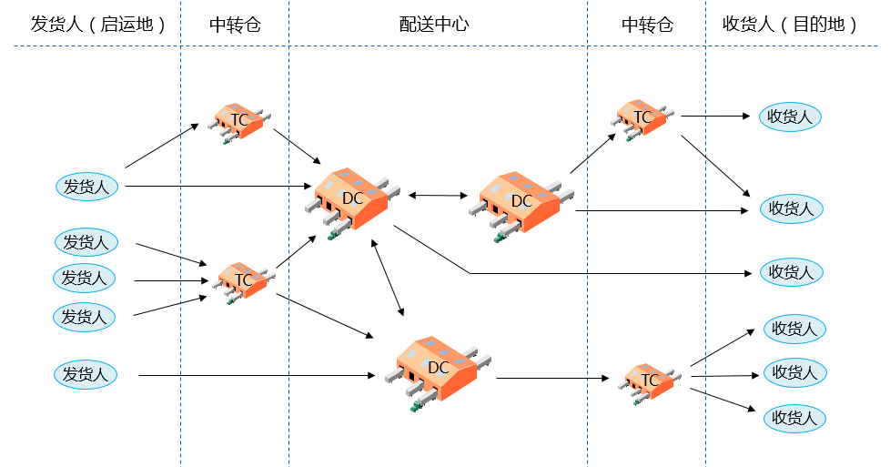

随着经济全球化的发展，未来的竞争将更多地表现在供应链管理的竞争上，仓储管理在整个供应链中起着至关重要的作用，若不能保证正确进货、库存控制及发货，会导致管理费用增加，服务质量难以保证，影响企业的竞争力。如今的仓库作业和库存控制已十分复杂化多样化，仅靠人工管理，不但费时费力，而且容易出错；传统仓储管理已无法保证企业各种资源的高效利用，4PNT仓储管理解决方案，可以帮助物流企业或企业物流部门规范仓储业务流程，精细化管理，提升仓储管理效率，增强整体物流管理水平和核心竞争力。
仓储配送运营模式分析如下：

4PNT仓储配送管理解决方案是集成仓储管理系统、自动化仓储系统、金融监管系统、安防管理系统，广泛应用于各种类型仓库，如平面堆垛仓、货架式立体仓、自动化立体仓等全方位管理的综合性解决方案；适用于金融监管仓、保税仓、普通仓和VMI仓等各种业务类型仓库的管理。采用RF手持终端、RFID电子标签和阅读器等信息采集技术，与自动化系统、银行监管系统、安防管理系统等集成，通过丰富的出入库策略、灵活可组合的物流方案库、自定义的计费模式等功能规范和支撑仓储作业流程，对仓库账务、实物和作业任务进行一体化管理，实现仓库账实相符、实时、可监控、可视化，作业效率最优化，实现对仓库环境和物料安全的全面监控。